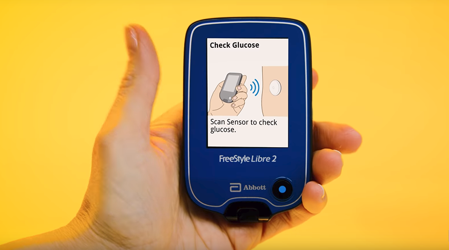

En la EASD 2018, en la ciudad de Berlín, el laboratorio Abbott presentó una nueva versión de su exitoso sistema de monitorización flash de glucosa, el FreeStyle Libre 2.
Este nuevo sensor, que ha recibido el marcado CE para su comercialización en Europa, incorpora un sistema de alarmas que te avisa de las hipoglucemias e hiperglucemias.
¿Cómo funciona el Libre 2?
El Freestyle Libre 2, a parte del módulo NFC (utilizado cuando escaneas el sensor) que ya incorporaba la primera versión, incorpora un módulo Bluetooth que está siempre conectado al nuevo lector Reader 2. De esta forma, si el sensor detecta que la glucosa esta fuera del rango preestablecido (alto o bajo de glucosa), el sensor envía una señal por bluetooth al lector para que se meustre una alerta sonora y te avise de que tu glucosa esta fuera de rango.
¡Pero antención! Cuando el sensor envía la alerta al lector de que estas fuera de rango, envía solo un mensaje para que el lector Reader 2 haga sonar una alarma, pero NO envía el dato de glucosa que tienes en ese momento. Si quieres saber cuanta glucosa tienes deberás coger el lector y escanear el sensor para obtener el número de glucosa, al igual que se venía haciendo con el Freestyle Libre 1.
Además hay que tener en cuenta que el Freestyle Libre 2 solo es compatible con el lector Reader 2, es decir, no es compatible con el primer lector y tampoco es compatible con la aplicación Freestyle Librelink o LibrelinkUP de momento.
 Imágenes de Wearable Technology.¿Cuál es la disponibilidad de este sensor?
A día de escribir este artículo, 05 de abril de 2019, el Freestyle Libre 2 solo esta disponible en Alemania bajo preescripcion médica a través de su web oficial www.freestylelibre.de/libre/, pero debes tener una dirección física en Alemania para poder recibirlo. Sin embargo, Abbott anunció durante la EASD 2018, que este nuevo sensor se extendería a otros países de Europa durante el 2019, aunque sin especificar para que países estaría disponible.
¿Siguen teniendo sentido transmisores como el Miaomiao?
Dado que, como hemos visto antertiormente, el nuevo sensor no envía el dato de azcuar por bluetooth, sino que sigue necesitando un escaneo con el lector para obtener el dato de glucosa, si que podrían seguir teniendo sentido estos transmisores.
Si te interesan las alarmas, y no te importa tener que escanear el sensor cada vez que quieres ver cuanto azucar tienes, el sensor Freestyle Libre 2 sin ningún complemento es una buena solución para ti.
Si por el contrario quieres recibir las lecturas del sensor Libre 2 automáticamente en tu movil cada 5 minutos y no necesitar utilizar y llevar encima el lector, los transmisores como el Miaomiao son un total acierto. El Miaomiao te envía los datos del sensor al movil cada 5 minutos sin que tengas que hacer nada, te permite configurar infinidad de alarmas y te permite subir tus datos a la plataforma Nightscout en tiempo real, de tal forma que, por ejemplo, si tu hijo tiene diabetes, puedes seguir sus niveles de azucar en tiempo real cuando esta en el colegio o durmiendo. Más información del Miaomiao.
El Freestyle Libre 2 lleva una nueva encriptación que ya ha sido dessencriptada por el equipo de desarrolladores de Nightscout. En las próximas semanas el fabricante del Miaomiao lanzará una nueva versión de firmware del Miaomiao haciéndolo compatible con el Libre 2. Si ya tienes el Miaomiao y quieres adquirir el Libre 2, no necesitarás comprar un nuevo Miaomiao.
Escrito por DiabetLife Team.